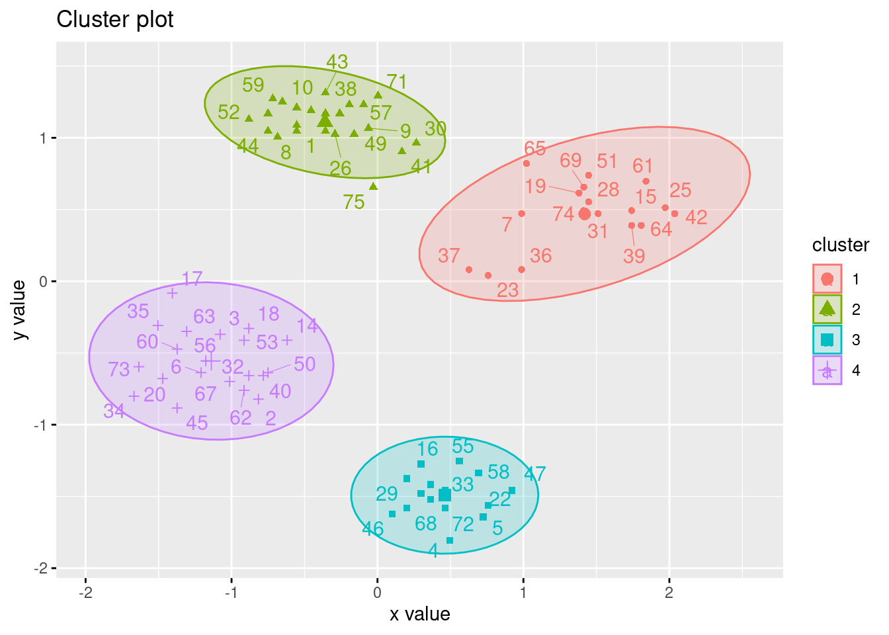
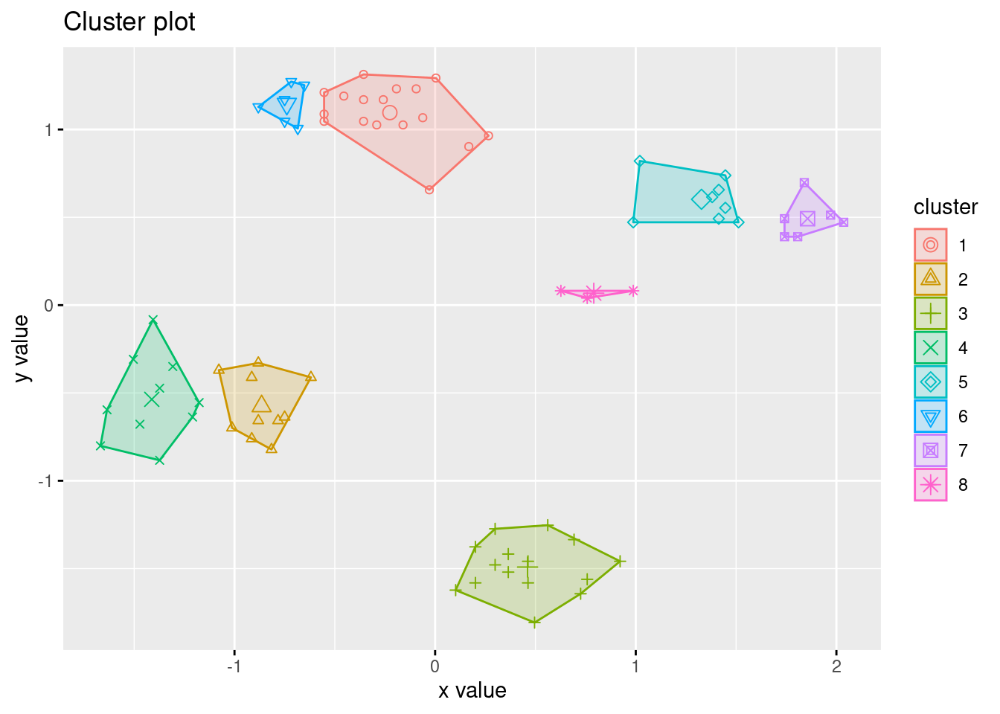
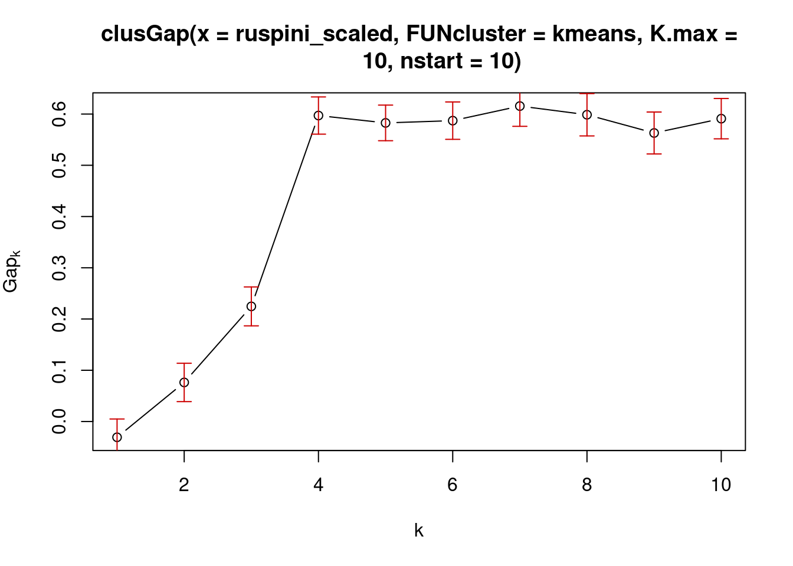
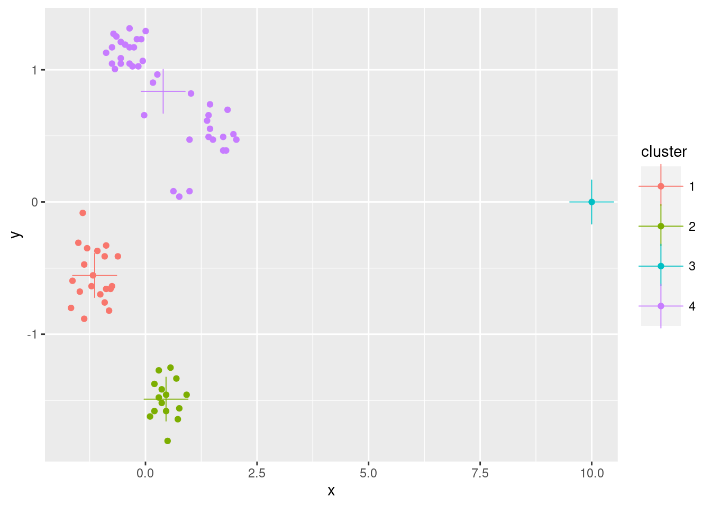

Chapter 7 Clustering Analysis
Packages used for this chapter: cluster (Maechler et al., 2021), dbscan (Hahsler & Piekenbrock, 2021), e1071 (Meyer et al., 2021), factoextra (Kassambara & Mundt, 2020), fpc (Hennig, 2020), GGally (Schloerke et al., 2021), kernlab (Karatzoglou et al., 2019), mclust (Fraley et al., 2020), mlbench (Leisch & Dimitriadou., 2021), scatterpie (Yu, 2021), seriation (Hahsler, Buchta, & Hornik, 2021), tidyverse (Wickham, 2021c)
You can read the free sample chapter from the textbook (Tan et al., 2005): Chapter 7. Cluster Analysis: Basic Concepts and Algorithms
7.1 Data Preparation
library(tidyverse)We will use here a small and very clean dataset called Ruspini which is included in the R package cluster.
data(ruspini, package = "cluster")The Ruspini data set, consisting of 75 points in four groups that is popular for illustrating clustering techniques. It is a very simple data set with well separated clusters.
The original dataset has the points ordered by group. We can shuffle the data (rows) using sample_frac which samples by default 100%.
ruspini <- as_tibble(ruspini) %>% sample_frac()
ruspini## # A tibble: 75 x 2
## x y
## <int> <int>
## 1 38 143
## 2 30 52
## 3 22 74
## 4 70 4
## 5 77 12
## 6 18 61
## 7 85 115
## 8 34 141
## 9 53 144
## 10 35 153
## # … with 65 more rows7.1.1 Data cleaning
ggplot(ruspini, aes(x = x, y = y)) + geom_point()
summary(ruspini)## x y
## Min. : 4.0 Min. : 4.0
## 1st Qu.: 31.5 1st Qu.: 56.5
## Median : 52.0 Median : 96.0
## Mean : 54.9 Mean : 92.0
## 3rd Qu.: 76.5 3rd Qu.:141.5
## Max. :117.0 Max. :156.0For most clustering algorithms it is necessary to handle missing values and outliers (e.g., remove the observations). For details see Section “Outlier removal” below. This data set has not missing values or strong outlier and looks like it has some very clear groups.
7.1.2 Scale data
Clustering algorithms use distances and the variables with the largest number range will dominate distance calculation. The summary above shows that this is not an issue for the Ruspini dataset with
both, x and y, being roughly between 0 and 150. Most data analysts will still
scale each column in the data to zero mean and unit standard deviation (z-scores).
Note: The standard scale() function scales a whole data matrix so we implement a function for a single vector and apply it to all numeric columns.
## I use this till tidyverse implements a scale function
scale_numeric <- function(x) x %>% mutate_if(is.numeric, function(y) as.vector(scale(y)))
ruspini_scaled <- ruspini %>% scale_numeric()
summary(ruspini_scaled)## x y
## Min. :-1.668 Min. :-1.807
## 1st Qu.:-0.766 1st Qu.:-0.729
## Median :-0.094 Median : 0.082
## Mean : 0.000 Mean : 0.000
## 3rd Qu.: 0.709 3rd Qu.: 1.016
## Max. : 2.037 Max. : 1.314After scaling, most z-scores will fall in the range \([-3,3]\) (z-scores are measured in standard deviations from the mean), where \(0\) means average.
7.2 Clustering methods
7.2.1 k-means Clustering
k-means implicitly assumes Euclidean distances. We use \(k = 4\) clusters and run the algorithm 10 times with random initialized centroids. The best result is returned.
km <- kmeans(ruspini_scaled, centers = 4, nstart = 10)
km## K-means clustering with 4 clusters of sizes 17, 23, 15, 20
##
## Cluster means:
## x y
## 1 1.419 0.469
## 2 -0.360 1.109
## 3 0.461 -1.491
## 4 -1.139 -0.556
##
## Clustering vector:
## [1] 2 4 4 3 3 4 1 2 2 2 3 2 3 4 1 3 4 4 1 4 2 3 1 2 1
## [26] 2 3 1 3 2 1 4 3 4 4 1 1 2 1 4 2 1 2 2 4 3 3 2 2 4
## [51] 1 2 4 2 3 4 2 3 2 4 1 4 4 1 1 2 4 3 1 2 2 3 4 1 2
##
## Within cluster sum of squares by cluster:
## [1] 3.64 2.66 1.08 2.71
## (between_SS / total_SS = 93.2 %)
##
## Available components:
##
## [1] "cluster" "centers" "totss"
## [4] "withinss" "tot.withinss" "betweenss"
## [7] "size" "iter" "ifault"km is an R object implemented as a list. The clustering vector contains the
cluster assignment for each data row and can be accessed using km$cluster. I add the
cluster assignment as a column to the scaled dataset (I make it a factor since it represents a
nominal label).
ruspini_clustered <- ruspini_scaled %>% add_column(cluster = factor(km$cluster))
ruspini_clustered## # A tibble: 75 x 3
## x y cluster
## <dbl> <dbl> <fct>
## 1 -0.553 1.05 2
## 2 -0.816 -0.822 4
## 3 -1.08 -0.370 4
## 4 0.496 -1.81 3
## 5 0.725 -1.64 3
## 6 -1.21 -0.637 4
## 7 0.987 0.472 1
## 8 -0.685 1.01 2
## 9 -0.0616 1.07 2
## 10 -0.652 1.25 2
## # … with 65 more rowsggplot(ruspini_clustered, aes(x = x, y = y, color = cluster)) + geom_point()
Add the centroids to the plot.
centroids <- as_tibble(km$centers, rownames = "cluster")
centroids## # A tibble: 4 x 3
## cluster x y
## <chr> <dbl> <dbl>
## 1 1 1.42 0.469
## 2 2 -0.360 1.11
## 3 3 0.461 -1.49
## 4 4 -1.14 -0.556ggplot(ruspini_clustered, aes(x = x, y = y, color = cluster)) + geom_point() +
geom_point(data = centroids, aes(x = x, y = y, color = cluster), shape = 3, size = 10)
Use the factoextra package for visualization
library(factoextra)
fviz_cluster(km, data = ruspini_scaled, centroids = TRUE, repel = TRUE, ellipse.type = "norm")## Warning: ggrepel: 10 unlabeled data points (too many
## overlaps). Consider increasing max.overlaps
7.2.1.1 Inspect clusters
We inspect the clusters created by the 4-cluster k-means solution. The following code can be adapted to be used for other clustering methods.
7.2.1.1.1 Cluster Profiles
Inspect the centroids with horizontal bar charts organized by cluster. To group the plots by cluster, we have to change the data format to the “long”-format using a pivot operation. I use colors to match the clusters in the scatter plots.
ggplot(pivot_longer(centroids, cols = c(x, y), names_to = "feature"),
aes(x = value, y = feature, fill = cluster)) +
geom_bar(stat = "identity") +
facet_grid(rows = vars(cluster))
7.2.1.1.2 Extract a single cluster
You need is to filter the rows corresponding to the cluster index. The next example calculates summary statistics and then plots all data points of cluster 1.
cluster1 <- ruspini_clustered %>% filter(cluster == 1)
cluster1## # A tibble: 17 x 3
## x y cluster
## <dbl> <dbl> <fct>
## 1 0.987 0.472 1
## 2 1.74 0.492 1
## 3 1.38 0.615 1
## 4 0.758 0.0405 1
## 5 1.97 0.513 1
## 6 1.45 0.554 1
## 7 1.51 0.472 1
## 8 0.987 0.0816 1
## 9 0.627 0.0816 1
## 10 1.74 0.390 1
## 11 2.04 0.472 1
## 12 1.45 0.739 1
## 13 1.84 0.698 1
## 14 1.81 0.390 1
## 15 1.02 0.821 1
## 16 1.41 0.657 1
## 17 1.41 0.492 1summary(cluster1)## x y cluster
## Min. :0.627 Min. :0.041 1:17
## 1st Qu.:1.020 1st Qu.:0.390 2: 0
## Median :1.446 Median :0.492 3: 0
## Mean :1.419 Mean :0.469 4: 0
## 3rd Qu.:1.741 3rd Qu.:0.615
## Max. :2.037 Max. :0.821ggplot(cluster1, aes(x = x, y = y)) + geom_point() +
coord_cartesian(xlim = c(-2, 2), ylim = c(-2, 2))
What happens if we try to cluster with 8 centers?
fviz_cluster(kmeans(ruspini_scaled, centers = 8), data = ruspini_scaled,
centroids = TRUE, geom = "point", ellipse.type = "norm")## Too few points to calculate an ellipse
7.2.2 Hierarchical Clustering
Hierarchical clustering starts with a distance matrix. dist() defaults to method=“Euclidean.” Note: Distance matrices become very large quickly (size and time complexity is \(O(n^2)\) where \(n\) is the number if data points). It is only possible to calculate and store the matrix for small data sets (maybe a few hundred thousand data points) in main memory. If your data is too large then you can use sampling.
d <- dist(ruspini_scaled)hclust() implements agglomerative hierarchical clustering. We cluster using complete link.
hc <- hclust(d, method = "complete")Hierarchical clustering does not return cluster assignments but a dendrogram. The standard plot function plots the dendrogram.
plot(hc)
Use factoextra (ggplot version). We can specify the number of clusters to visualize how the dendrogram will be cut into clusters.
fviz_dend(hc, k = 4)## Warning: `guides(<scale> = FALSE)` is deprecated.
## Please use `guides(<scale> = "none")` instead.
More plotting options for dendrograms, including plotting parts of large dendrograms can be found here.
Extract cluster assignments by cutting the dendrogram into four parts and add the cluster id to the data.
clusters <- cutree(hc, k = 4)
cluster_complete <- ruspini_scaled %>%
add_column(cluster = factor(clusters))
cluster_complete## # A tibble: 75 x 3
## x y cluster
## <dbl> <dbl> <fct>
## 1 -0.553 1.05 1
## 2 -0.816 -0.822 2
## 3 -1.08 -0.370 2
## 4 0.496 -1.81 3
## 5 0.725 -1.64 3
## 6 -1.21 -0.637 2
## 7 0.987 0.472 4
## 8 -0.685 1.01 1
## 9 -0.0616 1.07 1
## 10 -0.652 1.25 1
## # … with 65 more rowsggplot(cluster_complete, aes(x, y, color = cluster)) +
geom_point()
Try 8 clusters (Note: fviz_cluster needs a list with data and the cluster labels for hclust)
fviz_cluster(list(data = ruspini_scaled, cluster = cutree(hc, k = 8)), geom = "point")
Clustering with single link
hc_single <- hclust(d, method = "single")
fviz_dend(hc_single, k = 4)## Warning: `guides(<scale> = FALSE)` is deprecated.
## Please use `guides(<scale> = "none")` instead.
fviz_cluster(list(data = ruspini_scaled, cluster = cutree(hc_single, k = 4)), geom = "point")
7.2.3 Density-based clustering with DBSCAN
library(dbscan)DBSCAN stands for “Density-Based Spatial Clustering of Applications with Noise.” It groups together points that are closely packed together and treats points in low-density regions as outliers.
Parameters: minPts defines how many points in the epsilon neighborhood are needed to make a point a core point. It is often chosen as a smoothing parameter. I use here minPts = 4.
To decide on epsilon, the knee in the kNN distance plot is often used. Note that minPts contains the point itself, while the k-nearest neighbor does not. We therefore have to use k = minPts - 1! The knee is around eps = .32.
kNNdistplot(ruspini_scaled, k = 3)
abline(h = .32, col = "red")
run dbscan
db <- dbscan(ruspini_scaled, eps = .32, minPts = 4)
db## DBSCAN clustering for 75 objects.
## Parameters: eps = 0.32, minPts = 4
## The clustering contains 4 cluster(s) and 5 noise points.
##
## 0 1 2 3 4
## 5 23 20 15 12
##
## Available fields: cluster, eps, minPtsstr(db)## List of 3
## $ cluster: int [1:75] 1 2 2 3 3 2 0 1 1 1 ...
## $ eps : num 0.32
## $ minPts : num 4
## - attr(*, "class")= chr [1:2] "dbscan_fast" "dbscan"ggplot(ruspini_scaled %>% add_column(cluster = factor(db$cluster)),
aes(x, y, color = cluster)) + geom_point()
Note: Cluster 0 represents outliers).
fviz_cluster(db, ruspini_scaled, geom = "point")
Play with eps (neighborhood size) and MinPts (minimum of points needed for core cluster)
7.2.4 Partitioning Around Medoids (PAM)
PAM tries to solve the \(k\)-medoids problem. The problem is similar to \(k\)-means, but uses medoids instead of centroids to represent clusters. Like hierarchical clustering, it typically works with precomputed distance matrix. An advantage is that you can use any distance metric not just Euclidean distances. Note: The medoid is the most central data point in the middle of the cluster.
library(cluster)##
## Attaching package: 'cluster'## The following object is masked _by_ '.GlobalEnv':
##
## ruspinid <- dist(ruspini_scaled)
str(d)## 'dist' num [1:2775] 1.89 1.51 3.04 2.98 1.81 ...
## - attr(*, "Size")= int 75
## - attr(*, "Diag")= logi FALSE
## - attr(*, "Upper")= logi FALSE
## - attr(*, "method")= chr "Euclidean"
## - attr(*, "call")= language dist(x = ruspini_scaled)p <- pam(d, k = 4)
p## Medoids:
## ID
## [1,] 66 66
## [2,] 56 56
## [3,] 33 33
## [4,] 28 28
## Clustering vector:
## [1] 1 2 2 3 3 2 4 1 1 1 3 1 3 2 4 3 2 2 4 2 1 3 4 1 4
## [26] 1 3 4 3 1 4 2 3 2 2 4 4 1 4 2 1 4 1 1 2 3 3 1 1 2
## [51] 4 1 2 1 3 2 1 3 1 2 4 2 2 4 4 1 2 3 4 1 1 3 2 4 1
## Objective function:
## build swap
## 0.442 0.319
##
## Available components:
## [1] "medoids" "id.med" "clustering" "objective"
## [5] "isolation" "clusinfo" "silinfo" "diss"
## [9] "call"ruspini_clustered <- ruspini_scaled %>% add_column(cluster = factor(p$cluster))
medoids <- as_tibble(ruspini_scaled[p$medoids, ], rownames = "cluster")
medoids## # A tibble: 4 x 3
## cluster x y
## <chr> <dbl> <dbl>
## 1 1 -0.357 1.17
## 2 2 -1.18 -0.555
## 3 3 0.463 -1.46
## 4 4 1.45 0.554ggplot(ruspini_clustered, aes(x = x, y = y, color = cluster)) + geom_point() +
geom_point(data = medoids, aes(x = x, y = y, color = cluster), shape = 3, size = 10)
## __Note:__ `fviz_cluster` needs the original data.
fviz_cluster(c(p, list(data = ruspini_scaled)), geom = "point", ellipse.type = "norm")
7.2.5 Gaussian Mixture Models
library(mclust)## Package 'mclust' version 5.4.7
## Type 'citation("mclust")' for citing this R package in publications.##
## Attaching package: 'mclust'## The following object is masked from 'package:purrr':
##
## mapGaussian mixture models assume that the data set is the
result of drawing data from a set of
Gaussian distributions where each distribution represents a cluster. Estimation algorithms try to identify the location parameters of the distributions and thus can be used to find clusters.
Mclust() uses Bayesian Information Criterion (BIC) to find the
number of clusters (model selection). BIC uses the likelihood and a
penalty term to guard against overfitting.
m <- Mclust(ruspini_scaled)
summary(m)## ----------------------------------------------------
## Gaussian finite mixture model fitted by EM algorithm
## ----------------------------------------------------
##
## Mclust EEI (diagonal, equal volume and shape) model
## with 5 components:
##
## log-likelihood n df BIC ICL
## -91.3 75 16 -252 -252
##
## Clustering table:
## 1 2 3 4 5
## 23 20 15 3 14plot(m, what = "classification")
Rerun with a fixed number of 4 clusters
m <- Mclust(ruspini_scaled, G=4)
summary(m)## ----------------------------------------------------
## Gaussian finite mixture model fitted by EM algorithm
## ----------------------------------------------------
##
## Mclust EEI (diagonal, equal volume and shape) model
## with 4 components:
##
## log-likelihood n df BIC ICL
## -102 75 13 -259 -259
##
## Clustering table:
## 1 2 3 4
## 23 20 15 17plot(m, what = "classification")
7.2.6 Spectral clustering
Spectral clustering works by embedding the data points of the partitioning problem into the subspace of the k largest eigenvectors of a normalized affinity/kernel matrix. Then uses a simple clustering method like k-means.
library("kernlab")##
## Attaching package: 'kernlab'## The following object is masked from 'package:scales':
##
## alpha## The following object is masked from 'package:arules':
##
## size## The following object is masked from 'package:purrr':
##
## cross## The following object is masked from 'package:ggplot2':
##
## alphacluster_spec <- specc(as.matrix(ruspini_scaled), centers = 4)
cluster_spec## Spectral Clustering object of class "specc"
##
## Cluster memberships:
##
## 1 3 3 2 2 3 4 1 1 1 2 1 2 3 4 2 3 3 4 3 1 2 4 1 4 1 2 4 2 1 4 3 2 3 3 4 4 1 4 3 1 4 1 1 3 2 2 1 1 3 4 1 3 1 2 3 1 2 1 3 4 3 3 4 4 1 3 2 4 1 1 2 3 4 1
##
## Gaussian Radial Basis kernel function.
## Hyperparameter : sigma = 41.7670067458421
##
## Centers:
## [,1] [,2]
## [1,] -0.360 1.109
## [2,] 0.461 -1.491
## [3,] -1.139 -0.556
## [4,] 1.419 0.469
##
## Cluster size:
## [1] 23 15 20 17
##
## Within-cluster sum of squares:
## [1] 53.27 53.27 8.81 18.84ggplot(ruspini_scaled %>% add_column(cluster = factor(cluster_spec)),
aes(x, y, color = cluster)) + geom_point()
7.2.7 Fuzzy C-Means Clustering
The fuzzy clustering version of the k-means clustering problem. Each data point has a degree of membership to for each cluster.
library("e1071")
cluster_cmeans <- cmeans(as.matrix(ruspini_scaled), centers = 4)
cluster_cmeans## Fuzzy c-means clustering with 4 clusters
##
## Cluster centers:
## x y
## 1 -1.137 -0.555
## 2 0.455 -1.476
## 3 1.505 0.516
## 4 -0.376 1.114
##
## Memberships:
## 1 2 3 4
## [1,] 0.012065 0.004750 7.76e-03 9.75e-01
## [2,] 0.866509 0.074035 2.11e-02 3.84e-02
## [3,] 0.971282 0.010239 4.91e-03 1.36e-02
## [4,] 0.024935 0.947252 1.65e-02 1.14e-02
## [5,] 0.020593 0.950361 1.82e-02 1.09e-02
## [6,] 0.992095 0.003402 1.36e-03 3.14e-03
## [7,] 0.039260 0.053619 8.11e-01 9.62e-02
## [8,] 0.037605 0.013313 1.97e-02 9.29e-01
## [9,] 0.024784 0.013940 3.40e-02 9.27e-01
## [10,] 0.025639 0.010355 1.73e-02 9.47e-01
## [11,] 0.008241 0.983990 4.42e-03 3.35e-03
## [12,] 0.001560 0.000705 1.32e-03 9.96e-01
## [13,] 0.003861 0.992177 2.30e-03 1.66e-03
## [14,] 0.768380 0.097124 4.14e-02 9.31e-02
## [15,] 0.005870 0.009963 9.73e-01 1.13e-02
## [16,] 0.024150 0.952363 1.34e-02 1.01e-02
## [17,] 0.828839 0.045276 2.77e-02 9.82e-02
## [18,] 0.904502 0.033979 1.64e-02 4.51e-02
## [19,] 0.003221 0.004747 9.85e-01 7.44e-03
## [20,] 0.934346 0.027260 1.15e-02 2.69e-02
## [21,] 0.003385 0.001497 2.77e-03 9.92e-01
## [22,] 0.020387 0.949234 1.93e-02 1.11e-02
## [23,] 0.107506 0.177387 5.41e-01 1.74e-01
## [24,] 0.011470 0.004817 8.41e-03 9.75e-01
## [25,] 0.018433 0.031839 9.16e-01 3.39e-02
## [26,] 0.004627 0.002182 4.27e-03 9.89e-01
## [27,] 0.003167 0.993633 1.85e-03 1.35e-03
## [28,] 0.000609 0.000943 9.97e-01 1.32e-03
## [29,] 0.028738 0.947019 1.34e-02 1.08e-02
## [30,] 0.071388 0.050971 1.76e-01 7.02e-01
## [31,] 0.000250 0.000411 9.99e-01 5.07e-04
## [32,] 0.939767 0.029086 1.01e-02 2.10e-02
## [33,] 0.000110 0.999766 7.43e-05 5.05e-05
## [34,] 0.860429 0.059383 2.50e-02 5.52e-02
## [35,] 0.895316 0.033633 1.80e-02 5.31e-02
## [36,] 0.065465 0.118857 7.06e-01 1.10e-01
## [37,] 0.128305 0.183755 4.70e-01 2.18e-01
## [38,] 0.011252 0.005928 1.35e-02 9.69e-01
## [39,] 0.007575 0.013540 9.65e-01 1.39e-02
## [40,] 0.890088 0.054964 1.83e-02 3.66e-02
## [41,] 0.067223 0.044821 1.33e-01 7.55e-01
## [42,] 0.022924 0.040523 8.96e-01 4.09e-02
## [43,] 0.009541 0.004635 9.54e-03 9.76e-01
## [44,] 0.048384 0.016805 2.45e-02 9.10e-01
## [45,] 0.914871 0.040505 1.46e-02 3.00e-02
## [46,] 0.049811 0.912543 2.04e-02 1.73e-02
## [47,] 0.038484 0.892180 4.59e-02 2.34e-02
## [48,] 0.004484 0.002237 4.75e-03 9.89e-01
## [49,] 0.015164 0.007890 1.73e-02 9.60e-01
## [50,] 0.872757 0.063345 2.13e-02 4.26e-02
## [51,] 0.006153 0.008725 9.70e-01 1.48e-02
## [52,] 0.075851 0.025668 3.63e-02 8.62e-01
## [53,] 0.942647 0.022073 9.90e-03 2.54e-02
## [54,] 0.041983 0.015519 2.38e-02 9.19e-01
## [55,] 0.017339 0.959100 1.45e-02 9.02e-03
## [56,] 0.998933 0.000436 1.84e-04 4.47e-04
## [57,] 0.020461 0.011470 2.85e-02 9.40e-01
## [58,] 0.018343 0.953743 1.78e-02 1.02e-02
## [59,] 0.037153 0.014629 2.37e-02 9.25e-01
## [60,] 0.962608 0.013809 6.49e-03 1.71e-02
## [61,] 0.013081 0.020545 9.40e-01 2.68e-02
## [62,] 0.930263 0.035820 1.14e-02 2.25e-02
## [63,] 0.954076 0.015519 7.84e-03 2.26e-02
## [64,] 0.010680 0.019237 9.51e-01 1.93e-02
## [65,] 0.039416 0.046127 7.88e-01 1.27e-01
## [66,] 0.000964 0.000451 8.88e-04 9.98e-01
## [67,] 0.973167 0.012776 4.51e-03 9.55e-03
## [68,] 0.025463 0.953144 1.19e-02 9.53e-03
## [69,] 0.003456 0.005041 9.83e-01 8.07e-03
## [70,] 0.010326 0.004135 6.88e-03 9.79e-01
## [71,] 0.033362 0.019994 5.51e-02 8.92e-01
## [72,] 0.003079 0.993497 2.03e-03 1.40e-03
## [73,] 0.887734 0.043108 2.00e-02 4.92e-02
## [74,] 0.001160 0.001840 9.95e-01 2.46e-03
## [75,] 0.092067 0.051905 1.05e-01 7.51e-01
##
## Closest hard clustering:
## [1] 4 1 1 2 2 1 3 4 4 4 2 4 2 1 3 2 1 1 3 1 4 2 3 4 3
## [26] 4 2 3 2 4 3 1 2 1 1 3 3 4 3 1 4 3 4 4 1 2 2 4 4 1
## [51] 3 4 1 4 2 1 4 2 4 1 3 1 1 3 3 4 1 2 3 4 4 2 1 3 4
##
## Available components:
## [1] "centers" "size" "cluster"
## [4] "membership" "iter" "withinerror"
## [7] "call"Plot membership (shown as small pie charts)
library("scatterpie")
ggplot() +
geom_scatterpie(data = cbind(ruspini_scaled, cluster_cmeans$membership),
aes(x = x, y = y), cols = colnames(cluster_cmeans$membership), legend_name = "Membership") + coord_equal()
7.3 Internal Cluster Validation
7.3.1 Compare the Clustering Quality
The two most popular quality metrics are the within-cluster sum of squares (WCSS) used
by \(k\)-means and
the average silhouette width.
Look at within.cluster.ss and avg.silwidth below.
##library(fpc)Notes:
* I do not load fpc since the NAMESPACE overwrites dbscan.
* The clustering (second argument below) has to be supplied as a vector with numbers (cluster IDs) and cannot be a factor (use as.integer() to convert the factor to an ID).
fpc::cluster.stats(d, km$cluster)## $n
## [1] 75
##
## $cluster.number
## [1] 4
##
## $cluster.size
## [1] 17 23 15 20
##
## $min.cluster.size
## [1] 15
##
## $noisen
## [1] 0
##
## $diameter
## [1] 1.463 1.159 0.836 1.119
##
## $average.distance
## [1] 0.581 0.429 0.356 0.482
##
## $median.distance
## [1] 0.502 0.393 0.338 0.449
##
## $separation
## [1] 0.768 0.768 1.158 1.158
##
## $average.toother
## [1] 2.29 2.15 2.31 2.16
##
## $separation.matrix
## [,1] [,2] [,3] [,4]
## [1,] 0.000 0.768 1.31 1.34
## [2,] 0.768 0.000 1.96 1.22
## [3,] 1.308 1.958 0.00 1.16
## [4,] 1.340 1.220 1.16 0.00
##
## $ave.between.matrix
## [,1] [,2] [,3] [,4]
## [1,] 0.00 1.92 2.22 2.77
## [2,] 1.92 0.00 2.75 1.89
## [3,] 2.22 2.75 0.00 1.87
## [4,] 2.77 1.89 1.87 0.00
##
## $average.between
## [1] 2.22
##
## $average.within
## [1] 0.463
##
## $n.between
## [1] 2091
##
## $n.within
## [1] 684
##
## $max.diameter
## [1] 1.46
##
## $min.separation
## [1] 0.768
##
## $within.cluster.ss
## [1] 10.1
##
## $clus.avg.silwidths
## 1 2 3 4
## 0.681 0.745 0.807 0.721
##
## $avg.silwidth
## [1] 0.737
##
## $g2
## NULL
##
## $g3
## NULL
##
## $pearsongamma
## [1] 0.842
##
## $dunn
## [1] 0.525
##
## $dunn2
## [1] 3.23
##
## $entropy
## [1] 1.37
##
## $wb.ratio
## [1] 0.209
##
## $ch
## [1] 324
##
## $cwidegap
## [1] 0.415 0.315 0.235 0.261
##
## $widestgap
## [1] 0.415
##
## $sindex
## [1] 0.858
##
## $corrected.rand
## NULL
##
## $vi
## NULLRead ? cluster.stats for an explanation of all the available indices.
sapply(
list(
km = km$cluster,
hc_compl = cutree(hc, k = 4),
hc_single = cutree(hc_single, k = 4)
),
FUN = function(x)
fpc::cluster.stats(d, x))[c("within.cluster.ss", "avg.silwidth"), ]## km hc_compl hc_single
## within.cluster.ss 10.1 10.1 10.1
## avg.silwidth 0.737 0.737 0.7377.3.2 Silhouette plot
library(cluster)
plot(silhouette(km$cluster, d))
Note: The silhouette plot does not show correctly in R Studio if you have too many objects (bars are missing). I will work when you open a new plotting device with windows(), x11() or quartz().
ggplot visualization using factoextra
fviz_silhouette(silhouette(km$cluster, d))## cluster size ave.sil.width
## 1 1 17 0.68
## 2 2 23 0.75
## 3 3 15 0.81
## 4 4 20 0.72
7.3.3 Find Optimal Number of Clusters for k-means
ggplot(ruspini_scaled, aes(x, y)) + geom_point()
## We will use different methods and try 1-10 clusters.
set.seed(1234)
ks <- 2:107.3.3.1 Elbow Method: Within-Cluster Sum of Squares
Calculate the within-cluster sum of squares for different numbers of clusters and look for the knee or elbow in the plot.
(nstart = 5 just repeats k-means 5 times and returns the best solution)
WCSS <- sapply(ks, FUN = function(k) {
kmeans(ruspini_scaled, centers = k, nstart = 5)$tot.withinss
})
ggplot(as_tibble(ks, WCSS), aes(ks, WCSS)) + geom_line() +
geom_vline(xintercept = 4, color = "red", linetype = 2)
7.3.3.2 Average Silhouette Width
Plot the average silhouette width for different number of clusters and look for the maximum in the plot.
ASW <- sapply(ks, FUN=function(k) {
fpc::cluster.stats(d, kmeans(ruspini_scaled, centers=k, nstart = 5)$cluster)$avg.silwidth
})
best_k <- ks[which.max(ASW)]
best_k## [1] 4ggplot(as_tibble(ks, ASW), aes(ks, ASW)) + geom_line() +
geom_vline(xintercept = best_k, color = "red", linetype = 2)
7.3.3.3 Dunn Index
Use Dunn index (another internal measure given by min. separation/ max. diameter)
DI <- sapply(ks, FUN=function(k) {
fpc::cluster.stats(d, kmeans(ruspini_scaled, centers=k, nstart=5)$cluster)$dunn
})
best_k <- ks[which.max(DI)]
ggplot(as_tibble(ks, DI), aes(ks, DI)) + geom_line() +
geom_vline(xintercept = best_k, color = "red", linetype = 2)
7.3.3.4 Gap Statistic
Compares the change in within-cluster dispersion with that expected
from a null model (see ? clusGap).
The default method is to
choose the smallest k such that its value Gap(k) is not more
than 1 standard error away from the first local maximum.
library(cluster)
k <- clusGap(ruspini_scaled, FUN = kmeans, nstart = 10, K.max = 10)
k## Clustering Gap statistic ["clusGap"] from call:
## clusGap(x = ruspini_scaled, FUNcluster = kmeans, K.max = 10, nstart = 10)
## B=100 simulated reference sets, k = 1..10; spaceH0="scaledPCA"
## --> Number of clusters (method 'firstSEmax', SE.factor=1): 4
## logW E.logW gap SE.sim
## [1,] 3.50 3.47 -0.0308 0.0357
## [2,] 3.07 3.15 0.0762 0.0374
## [3,] 2.68 2.90 0.2247 0.0380
## [4,] 2.11 2.70 0.5971 0.0363
## [5,] 1.99 2.57 0.5827 0.0347
## [6,] 1.86 2.45 0.5871 0.0365
## [7,] 1.73 2.35 0.6156 0.0395
## [8,] 1.66 2.26 0.5987 0.0413
## [9,] 1.61 2.17 0.5630 0.0409
## [10,] 1.50 2.09 0.5910 0.0393plot(k)
Note: these methods can also be used for hierarchical clustering.
There have been many other methods and indices proposed to determine the number of clusters. See, e.g., package NbClust.
7.3.4 Visualizing the Distance Matrix
ggplot(ruspini_scaled, aes(x, y, color = factor(km$cluster))) + geom_point()
d <- dist(ruspini_scaled)Inspect the distance matrix between the first 5 objects.
as.matrix(d)[1:5, 1:5]## 1 2 3 4 5
## 1 0.00 1.887 1.511 3.041 2.978
## 2 1.89 0.000 0.522 1.640 1.746
## 3 1.51 0.522 0.000 2.131 2.207
## 4 3.04 1.640 2.131 0.000 0.282
## 5 2.98 1.746 2.207 0.282 0.000A false-color image visualizes each value in the matrix as a pixel with the color representing the value.
library(seriation)
pimage(d, col = bluered(100))
Rows and columns are the objects as they are ordered in the data set. The diagonal represents the distance between an object and itself and has by definition a distance of 0 (dark line). Visualizing the unordered distance matrix does not show much structure, but we can reorder the matrix (rows and columns) using the k-means cluster labels from cluster 1 to 4. A clear block structure representing the clusters becomes visible.
pimage(d, order=order(km$cluster), col = bluered(100))
Plot function dissplot in package seriation rearranges the matrix and adds lines and cluster labels. In the lower half of the plot, it shows average dissimilarities between clusters. The function
organizes the objects by cluster and then reorders clusters and objects within clusters so that more similar objects are closer together.
dissplot(d, labels = km$cluster, options=list(main="k-means with k=4"))
The reordering by dissplot makes the misspecification of k visible as blocks.
dissplot(d, labels = kmeans(ruspini_scaled, centers = 3)$cluster, col = bluered(100))
dissplot(d, labels = kmeans(ruspini_scaled, centers = 9)$cluster, col = bluered(100))
Using factoextra
fviz_dist(d)
7.4 External Cluster Validation
External cluster validation uses ground truth information. That is, the user has an idea how the data should be grouped. This could be a known class label not provided to the clustering algorithm.
We use an artificial data set with known groups.
library(mlbench)
set.seed(1234)
shapes <- mlbench.smiley(n = 500, sd1 = 0.1, sd2 = 0.05)
plot(shapes)
Prepare data
truth <- as.integer(shapes$class)
shapes <- scale(shapes$x)
colnames(shapes) <- c("x", "y")
shapes <- as_tibble(shapes)
ggplot(shapes, aes(x, y)) + geom_point()
Find optimal number of Clusters for k-means
ks <- 2:20Use within sum of squares (look for the knee)
WCSS <- sapply(ks, FUN = function(k) {
kmeans(shapes, centers = k, nstart = 10)$tot.withinss
})
ggplot(as_tibble(ks, WCSS), aes(ks, WCSS)) + geom_line()
Looks like it could be 7 clusters
km <- kmeans(shapes, centers = 7, nstart = 10)
ggplot(shapes %>% add_column(cluster = factor(km$cluster)), aes(x, y, color = cluster)) +
geom_point()
Hierarchical clustering: We use single-link because of the mouth is non-convex and chaining may help.
d <- dist(shapes)
hc <- hclust(d, method = "single")Find optimal number of clusters
ASW <- sapply(ks, FUN = function(k) {
fpc::cluster.stats(d, cutree(hc, k))$avg.silwidth
})
ggplot(as_tibble(ks, ASW), aes(ks, ASW)) + geom_line()
The maximum is clearly at 4 clusters.
hc_4 <- cutree(hc, 4)
ggplot(shapes %>% add_column(cluster = factor(hc_4)), aes(x, y, color = cluster)) +
geom_point()
Compare with ground truth with the corrected (=adjusted) Rand index (ARI), the variation of information (VI) index, entropy and purity.
cluster_stats computes ARI and VI as comparative measures. I define functions for
entropy and purity here:
entropy <- function(cluster, truth) {
k <- max(cluster, truth)
cluster <- factor(cluster, levels = 1:k)
truth <- factor(truth, levels = 1:k)
w <- table(cluster)/length(cluster)
cnts <- sapply(split(truth, cluster), table)
p <- sweep(cnts, 1, rowSums(cnts), "/")
p[is.nan(p)] <- 0
e <- -p * log(p, 2)
sum(w * rowSums(e, na.rm = TRUE))
}
purity <- function(cluster, truth) {
k <- max(cluster, truth)
cluster <- factor(cluster, levels = 1:k)
truth <- factor(truth, levels = 1:k)
w <- table(cluster)/length(cluster)
cnts <- sapply(split(truth, cluster), table)
p <- sweep(cnts, 1, rowSums(cnts), "/")
p[is.nan(p)] <- 0
sum(w * apply(p, 1, max))
}calculate measures (for comparison we also use random “clusterings” with 4 and 6 clusters)
random_4 <- sample(1:4, nrow(shapes), replace = TRUE)
random_6 <- sample(1:6, nrow(shapes), replace = TRUE)
r <- rbind(
kmeans_7 = c(
unlist(fpc::cluster.stats(d, km$cluster, truth, compareonly = TRUE)),
entropy = entropy(km$cluster, truth),
purity = purity(km$cluster, truth)
),
hc_4 = c(
unlist(fpc::cluster.stats(d, hc_4, truth, compareonly = TRUE)),
entropy = entropy(hc_4, truth),
purity = purity(hc_4, truth)
),
random_4 = c(
unlist(fpc::cluster.stats(d, random_4, truth, compareonly = TRUE)),
entropy = entropy(random_4, truth),
purity = purity(random_4, truth)
),
random_6 = c(
unlist(fpc::cluster.stats(d, random_6, truth, compareonly = TRUE)),
entropy = entropy(random_6, truth),
purity = purity(random_6, truth)
)
)
r## corrected.rand vi entropy purity
## kmeans_7 0.63823 0.571 0.229 0.464
## hc_4 1.00000 0.000 0.000 1.000
## random_4 -0.00324 2.683 1.988 0.288
## random_6 -0.00213 3.076 1.728 0.144Notes:
- Hierarchical clustering found the perfect clustering.
- Entropy and purity are heavily impacted by the number of clusters (more clusters improve the metric).
- The corrected rand index shows clearly that the random clusterings have no relationship with the ground truth (very close to 0). This is a very helpful property.
Read ? cluster.stats for an explanation of all the available indices.
7.5 Advanced Data Preparation for Clustering
7.5.1 Outlier Removal
Most clustering algorithms perform complete assignment (i.e., all data points need to be assigned to a cluster). Outliers will affect the clustering. It is useful to identify outliers and remove strong outliers prior to clustering. A density based method to identify outlier is LOF (Local Outlier Factor). It is related to dbscan and compares the density around a point with the densities around its neighbors (you have to specify the neighborhood size \(k\)). The LOF value for a regular data point is 1. The larger the LOF value gets, the more likely the point is an outlier.
library(dbscan)Add a clear outlier to the scaled Ruspini dataset that is 10 standard deviations above the average for the x axis.
ruspini_scaled_outlier <- ruspini_scaled %>% add_case(x=10,y=0)7.5.1.1 Visual inspection of the data
Outliers can be identified using summary statistics, histograms, scatterplots (pairs plots), and boxplots, etc. We use here a pairs plot (the diagonal contains smoothed histograms). The outlier is visible as the single separate point in the scatter plot and as the long tail of the smoothed histogram for x (we would expect most observations to fall in the range [-3,3] in normalized data).
library("GGally")
ggpairs(ruspini_scaled_outlier)
The outlier is a problem for k-means
km <- kmeans(ruspini_scaled_outlier, centers = 4, nstart = 10)
ruspini_scaled_outlier_km <- ruspini_scaled_outlier%>%
add_column(cluster = factor(km$cluster))
centroids <- as_tibble(km$centers, rownames = "cluster")
ggplot(ruspini_scaled_outlier_km, aes(x = x, y = y, color = cluster)) + geom_point() +
geom_point(data = centroids, aes(x = x, y = y, color = cluster), shape = 3, size = 10)
This problem can be fixed by increasing the number of clusters and removing small clusters in a post-processing step or by identifying and removing outliers before clustering.
7.5.1.2 Local Outlier Factor (LOF)
The Local Outlier Factor is related to concepts of DBSCAN can help to identify potential outliers. Calculate the LOF (I choose a neighborhood size of 10 for density estimation),
lof <- lof(ruspini_scaled_outlier, k = 10)## Warning in lof(ruspini_scaled_outlier, k = 10): lof: k
## is now deprecated. use minPts = 11 instead .lof## [1] 0.978 1.044 0.926 1.024 1.022 0.966 1.154
## [8] 1.071 1.124 1.058 1.008 0.933 1.000 1.074
## [15] 1.008 0.987 1.184 0.989 0.984 1.080 0.911
## [22] 1.019 1.524 0.979 1.045 0.958 1.022 0.934
## [29] 0.979 1.470 0.964 0.988 0.973 1.236 1.082
## [36] 1.326 1.566 1.018 0.998 1.029 1.378 1.107
## [43] 0.952 1.083 1.091 1.029 1.181 1.009 1.031
## [50] 1.030 1.002 1.201 1.001 1.071 0.968 0.954
## [57] 1.046 0.970 1.066 1.045 0.989 0.966 1.028
## [64] 0.991 1.152 0.942 0.977 1.000 0.984 0.998
## [71] 1.174 0.996 1.116 0.934 1.588 17.027ggplot(ruspini_scaled_outlier %>% add_column(lof = lof), aes(x, y, color = lof)) +
geom_point() + scale_color_gradient(low = "gray", high = "red")
Plot the points sorted by increasing LOF and look for a knee.
ggplot(tibble(index = seq_len(length(lof)), lof = sort(lof)), aes(index, lof)) +
geom_line() +
geom_hline(yintercept = 1, color = "red", linetype = 2)
Choose a threshold above 1.
ggplot(ruspini_scaled_outlier %>% add_column(outlier = lof >= 2), aes(x, y, color = outlier)) +
geom_point()
## Analyze the found outliers (they might be interesting data points) and then cluster the data without them.
ruspini_scaled_clean <- ruspini_scaled_outlier %>% filter(lof < 2)
km <- kmeans(ruspini_scaled_clean, centers = 4, nstart = 10)
ruspini_scaled_clean_km <- ruspini_scaled_clean%>%
add_column(cluster = factor(km$cluster))
centroids <- as_tibble(km$centers, rownames = "cluster")
ggplot(ruspini_scaled_clean_km, aes(x = x, y = y, color = cluster)) + geom_point() +
geom_point(data = centroids, aes(x = x, y = y, color = cluster), shape = 3, size = 10)
There are many other outlier removal strategies available. See, e.g., package outliers.
7.5.2 Clustering Tendency
Most clustering algorithms will always produce a clustering, even if the data does not contain a cluster structure. It is typically good to check cluster tendency before attempting to cluster the data.
We use again the smiley data.
library(mlbench)
shapes <- mlbench.smiley(n = 500, sd1 = 0.1, sd2 = 0.05)$x
colnames(shapes) <- c("x", "y")
shapes <- as_tibble(shapes)7.5.2.1 Scatter plots
The first step is visual inspection using scatter plots.
ggplot(shapes, aes(x = x, y = y)) + geom_point()
Cluster tendency is typically indicated by several separated point clouds. Often an appropriate number of clusters can also be visually obtained by counting the number of point clouds. We see four clusters, but the mouth is not convex/spherical and thus will pose a problems to algorithms like k-means.
If the data has more than two features then you can use a pairs plot (scatterplot matrix) or look at a scatterplot of the first two principal components using PCA. #### Visual Analysis for Cluster Tendency Assessment (VAT)
VAT reorders the objects to show potential clustering tendency as a block structure (dark blocks along the main diagonal). We scale the data before using Euclidean distance.
library(seriation)
d_shapes <- dist(scale(shapes))
VAT(d_shapes, col = bluered(100))
iVAT uses the largest distances for all possible paths between two objects instead of the direct distances to make the block structure better visible.
iVAT(d_shapes, col = bluered(100))
7.5.2.2 Hopkins statistic
factoextra can also create a VAT plot and calculate the Hopkins statistic to assess clustering tendency. For the Hopkins statistic, a sample of size \(n\) is drawn from the data and then compares the nearest neighbor distribution with a simulated dataset drawn from a random uniform distribution (see detailed explanation). A values >.5 indicates usually a clustering tendency.
get_clust_tendency(shapes, n = 10)## $hopkins_stat
## [1] 0.907
##
## $plot
Both plots show a strong cluster structure with 4 clusters.
7.5.2.3 Data Without Clustering Tendency
data_random <- tibble(x = runif(500), y = runif(500))
ggplot(data_random, aes(x, y)) + geom_point()
No point clouds are visible, just noise.
d_random <- dist(data_random)
VAT(d_random, col = bluered(100))
iVAT(d_random, col = bluered(100))
get_clust_tendency(data_random, n = 10, graph = FALSE)## $hopkins_stat
## [1] 0.464
##
## $plot
## NULLThere is very little clustering structure visible indicating low clustering tendency and clustering should not be performed on this data. However, k-means can be used to partition the data into \(k\) regions of roughly equivalent size. This can be used as a data-driven discretization of the space.
7.5.2.4 k-means on Data Without Clustering Tendency
What happens if we perform k-means on data that has no inherent clustering structure?
km <- kmeans(data_random, centers = 4)
random_clustered<- data_random %>% add_column(cluster = factor(km$cluster))
ggplot(random_clustered, aes(x = x, y = y, color = cluster)) + geom_point()
k-means discretizes the space into similarly sized regions.